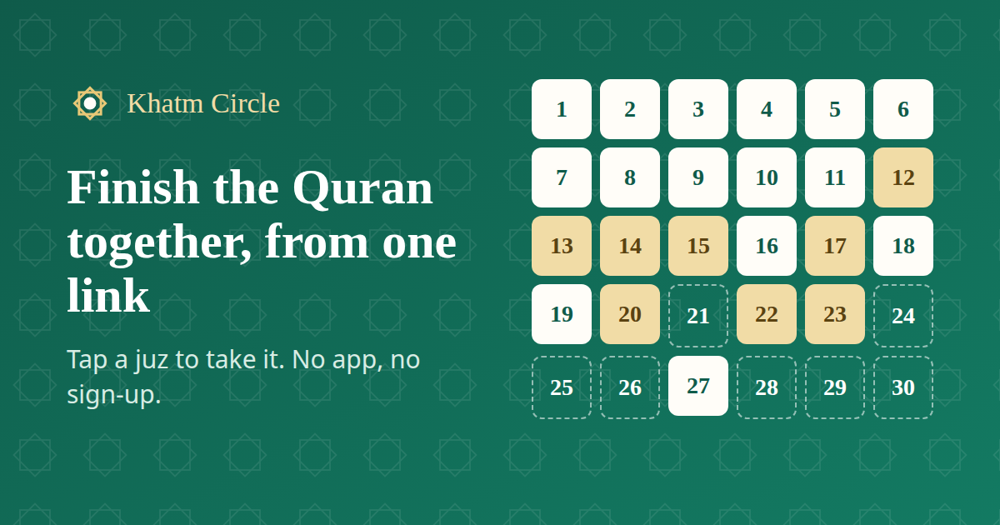

Finish the Quran together, from one link
Khatm Circle organises a group khatm for a family or mosque WhatsApp group. Share one link; each person taps a juz to take it and marks it read. Free, with no app, no account and no ads.

- For any occasionIn memory of someone, for someone who is ill, Ramadan, a wedding or exam, or a monthly circle on the same link.
- Nothing gets stuckJuz taken more than 3 days ago are marked. People can give a juz back, and the organiser can free it up or add a juz for someone who is not on WhatsApp.
- Group dhikr tooCount salawat or any dhikr towards a shared target, with a tap counter on the phone.
Support
Questions or problems? Open an issue at github.com/janwan2003/khatm-circle/issues.